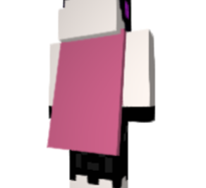
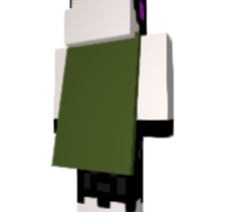

Cape
これらすべてのマントは、300カルマで購入することができる、弓師のデコレーションアイテムです。ゲーム内メニューより購入と設定の手続きができます。
黒猫
白猫
エンダーマン
スライム
マグマキューブ
鶏
 フグ
フグヴェックス
TNT
ガラス (無)
ガラス (白)
ガラス (橙)
ガラス (薄紫)
ガラス (空)
ガラス (黄)
ガラス (黄緑)
ガラス (桃)
ガラス (灰)
 ガラス (薄灰)
ガラス (薄灰)ガラス (青緑)
ガラス (紫)
ガラス (青)
ガラス (茶)
ガラス (緑)
ガラス (赤)
ガラス (黒)
白
橙
薄紫
空
黄
黄緑
桃
灰
薄灰
青緑
紫
青
茶
緑
赤
黒
氷